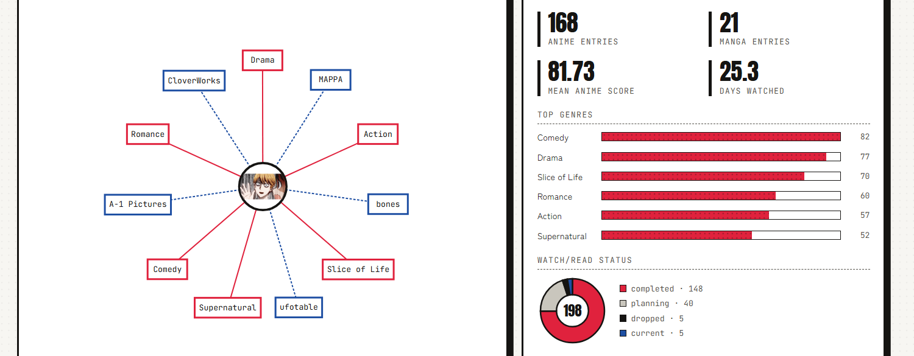
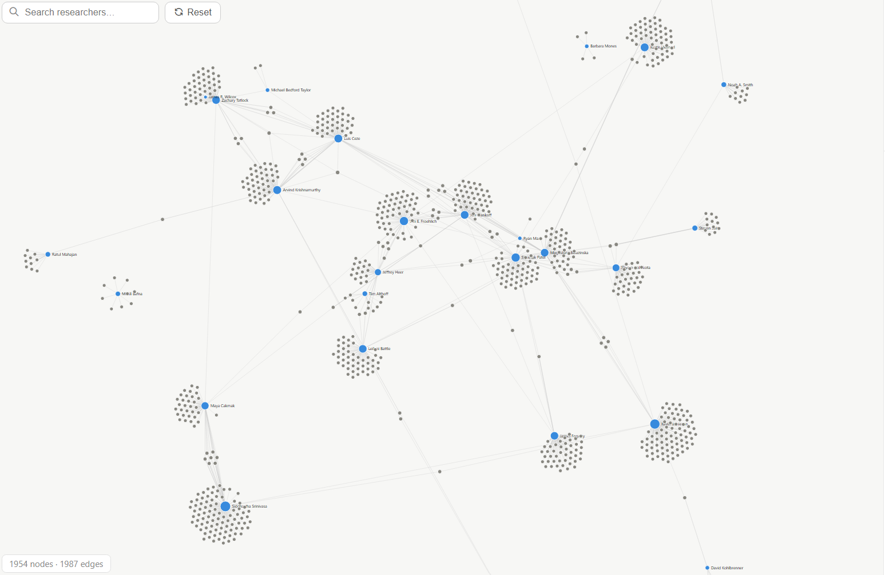

Most projects on this page are just for fun and personal practice; they are not particularly large and were made as little passion projects, outside of work or research. I provide them here to be helpful little tools, fun apps, or inspiration for others. Most code is open source on my GitHub and can be used under the MIT License.

A visualizer for AniList profiles featuring interactive statistics and personalized viewing insights.
Visit Project
Interactive visualization of collaboration networks among University of Washington Computer Science faculty based on published research papers.
Visit ProjectInteractive visualization of COVID-19 data during the pandemic. Course project for UW CSE 442.
Explanatory visualization of gerrymandering in the United States. Course project for UW CSE 442.
An interactive presentation about hyperbolic visualization of tree structures. Course project for UW MATH 445.
A color randomizer web app, allowing users to generate, invert, save, and sort colors.
A simple simulator for Conway's Game of Life, the famous one-player CS game.
A very simple, free PDF merger tool.
A python library of numerical sorts for lists. Provides a variety of sorting algorithms and helper methods.
A simple, free tool to create basic timelines over monthly periods. Created to use as a way to visualize prior affiliations and experience.